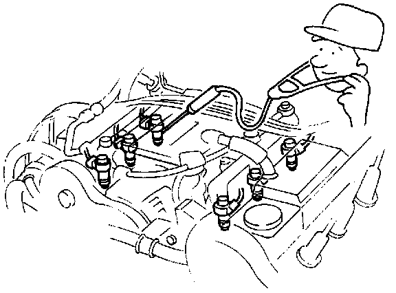
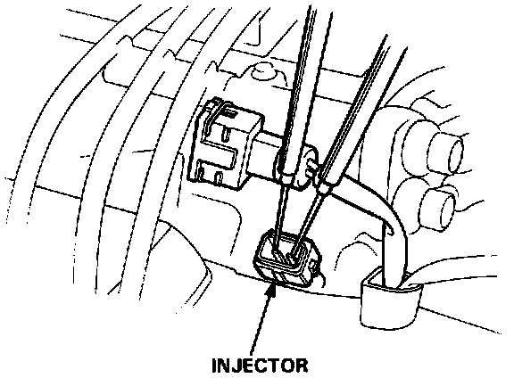

Fuel Injector: Testing and Inspection
Fuel Injector TestNOTE: Check the following items before testing: idle speed, ignition timing and idle CO%.
If the engine will run:
1. Disconnect the EACV 2P connector.
2. With the engine idling, disconnect each injector connector individually and inspect the change in the idling speed.
- If the idle speed drop is almost the same for each cylinder, the injectors are normal.
- If the idle speed or quality remains the same when you disconnect a particular injector, replace the injector and retest.
3. Turn the ignition switch off, reconnect EACV 2P connector and remove ALTERNATOR SENSE fuse for 10 seconds to reset the ECU.

4. Check the clicking sound of each injector by means of a stethoscope when the engine is idling.
If any injector fails to make the typical clicking sound, check the sound again after replacing the injector.
- If clicking sound is still absent, check the following:
- Whether there is any short-circuiting, wire breakage or poor connection in the YEL/BLK wire between the main relay and the resistor.
- Whether the resistor is open or corroded.
- Whether there is any short-circuiting, wire breakage or poor connection in the RED/BLK wire between the resistor and the injector.
- Whether there is any short-circuiting, wire breakage or poor connection in the wire between the injector and the ECU.
- If all is OK, check the Symptom to System Chart. Testing and Inspection
If the engine cannot be started:

1. Remove the connector of the injector, and measure the resistance between the 2 terminals of the injector.
Resistance should be: 1.5 - 2.5 ohms
If the resistance is not as specified, replace the injector.
If the resistance is as specified, check the fuel pressure.
- If the fuel pressure is as specified, check the following:
- Whether there is any short-circuiting, wire breakage or poor connection in the YEL/BLK wire between the main relay and the resistor.
- Whether the resistor is open or corroded.
- Whether there is any short-circuiting, wire breakage, or poor connection in the RED/BLK wire between the resistor and. the injector.
- Whether there is any short-circuiting, wire breakage or poor connection in the wire between the injector and the ECU.
- If all is OK, check the Symptom to System Chart. Testing and Inspection